In this session we will look at a couple of statistical methods namely; Linear Regression and Decision trees.
These are examples only using the builtin datasets which accompany all R installations. As far a s possible we will not deal with any of the mathematics or theory of these techniques, rather we will simply build up examples and provide indications of R functions available to analyse the resulting models with a view t deciding how 'good' they are.
You can get a list of the builtin datasets in R by typing the following command into the console
datasets()
The start of the output looks like this.
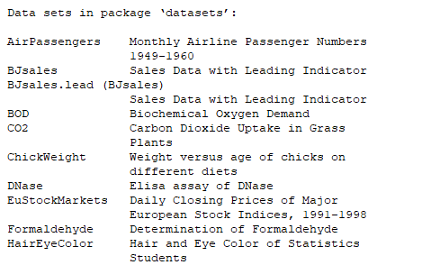
There are about 50 of them.
There are seveeral online repositories which hold large collectins of open source (free to use, with appropriate citation) datasets. Two of the more popular are;
Kaggle
and
UCI Machine Learning Repository
In linear regression we are going to try to predict values for a dependent variable, usually referred to as y based on the values of a set of predictor or independent variables denoted by the xs. the 's represent 'weightings' on the x values which have been determined by the creation of the model. The represents the error.
The general equation of the regression model can be written like this
In this equation i = 1..n and is the numbers of observations used to generate the model and p is the number of predictors or independent variables. y is the dependent variable that we are hoping to predict.
In the simplest form of (perfect) linear regression, where we are trying to predict y on the values of a single predictor x we can simplfy the equation to;
This you might recognise as the equation of a straight line in a 2-dimensional plane.
represents the intercept, i.e the value of when is 0 and represents the gradient or slope of the line.
We are going to start by making a perfect simple model. We can do this because there are many relationships for which we know by definition the relationship between the dependent and independent variables.
For example the relationship between a temperature recorded in Fahrenheit and the same temperature recorded in Centigrade.
Our equation
becomes
in this case is 0. There is no error or uncertainty. We have an exact equation.
Using our equation we can generate some data
# start with generating 1000 random numbers between -10 and 100 set.seed(42) centigrade <- runif(1000, -10, 100) # ramdonly select 100 set.seed(42) centigrade_selection = sample(centigrade, 100) # convert the centigrade values to fahrenheit fahrenheit_selection <- 32 + 1.8*centigrade_selection
The above code uses some functions that we have not seen before.
runif() creates a vector of real numbers between given limits. In our case we have generated a vector with 1000 element in it all of whose values are between -10 and 100.
There is a similar rnorm() function which will generate normally distributed values. In the call you specify, the number of values and the mean and std. deviation values to use. A typical call might bernorm(100, 0, 1).
set.seed() creates a starting point for random number generation.
sample() as the name suggests will extract a sample of entries. in our case 100 elements from the centigrade vector. sample has another parameter replace which allows you to specify that a selected element should (replace=TRUE) be allowed to be selected again, or not (replace=FALSE). The default is replace=FALSE which is what we would want in this case.
Sampling dataframes
Although there are times when you want to sample from a vector, it far more likely that you will want to sample from a dataframe. There are two ways of doing this. Using the SAFI_clean dataset we have demonstrated them in the code below.
library(tidyverse) interviews <- read_csv("data/SAFI_clean.csv", na = "NULL")
# to select rows from a dataframe
# nrow(interviews)
# str(nrow(interviews))
# sample(nrow(interviews), 3)
# str(sample(nrow(interviews), 3))sample_1_interviews <- interviews[sample(nrow(interviews), 3), ]
# a simpler way is to use the dplyr function sample_n()
sample_2_interviews <- sample_n(interviews, 3)
we are now in a position to plot our data. In the firat instance we will use the R builtin plot function
plot(centigrade_selection, fahrenheit_selection)
Unsurprisingly we get a very neat looking graph
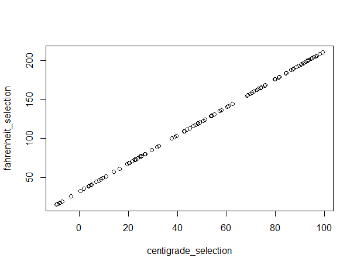
Now we will do the same again but this time using ggplot. In order to use ggplot we will first have to convert our two vectors into a dataframe. We can do that using the dta.frame function.
# Create a dataframe of our data df_temps <- data.frame(y=fahrenheit_selection, x=centigrade_selection) # now use ggplot2 library(ggplot2) ggplot(df_temps, aes(x=x, y=y)) + geom_point() + geom_line()
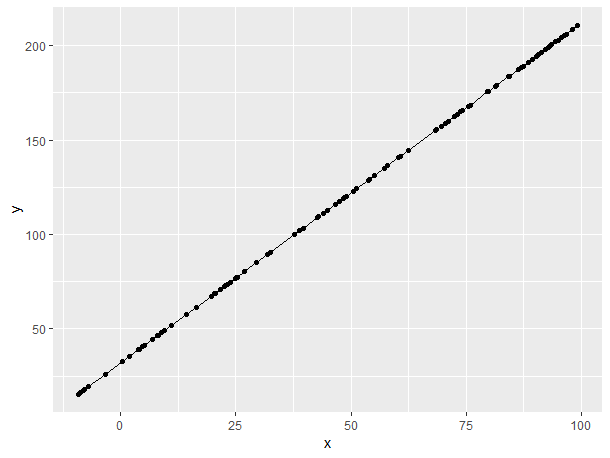
geom_line draws lines between adjacent points. The fact that we have what appears to be a best fit line through all of the points, and they all lie on the line, is simply a reflection that we started with perfect data.
ggplot also allows us to plot a best fit line using the geom_smooth function. We need to tell geom_smooth how we want the line to be drawn, and in our case we want it to draw the line that results from creating a linear model of the data.
ggplot(df_temps, aes(x=x, y=y)) + geom_point() + geom_smooth(method='lm',formula=y~x)
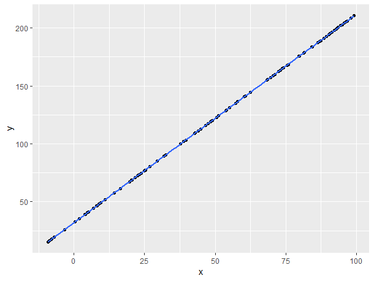
Apart from the colour, the plots certainly look identical.
We can use the lm function outside of ggplot
# create a model and see what it looks like model <- lm(y~x, data=df_temps) summary(model)
Output from summary
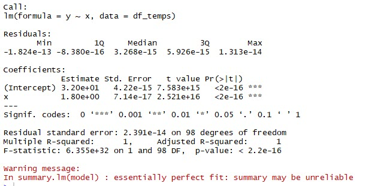
In the lm function, the data parameter is used to specify the dataframe containing the data and the first parameter, which is called formula but is rarely written as the formula is always specified first, contains and expression representing the dependent and independent variables to be used.
The dependent variable is specified first, and there will only be one of them and then after the ~ character we specified the independent variables that we want to be included in the model. In our case we only had the possibility of one (x), but in more realistic cases we would list the independent variable of interest by using the + operator. e.g. y ~ x + a + b + c. If we wanted to include all of the variables in the dataframe, we could use the shorthand notation of . e.eg. y ~ ..
In more realistic scenarios, it may be that you want to include some interaction variables, (algerbraic combinations of existing variables) into your model. In these cases, you could create the interaction terms as ne variable in the data frame in advance, or you could specify them directly using the I function.
Here is a silly example using our limited data frame.
# create a model and see what it looks like model <- lm(y~x + I(x*x) + I(log(x)), data=df_temps) summary(model)
Output from summary
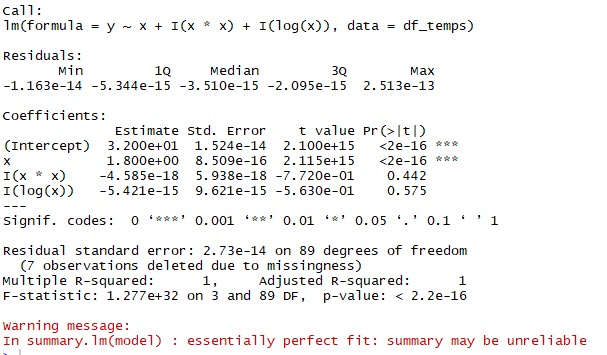
The output from the summary function provides us with key information about the model which has been created.
The information includes;
A detailed description of each of the areas in the summary output can be found at this webpage explaining-the-lm-summary-in-r
We saw in the summary infomation 'summary' information relating to the residual values from th model. There will be one value for each of our 100 'observations'. These represent the individual values in our original equation.
We can extract the complete vector of residuals from the model object with the following code.
# get the residuals residuals <- resid(model)
We can now create a dataframe of the residuals and the original dependent variable values and plot them in a scatter plot.
ggplot(df_resid, aes(x=dependent_variable, y=Residuals)) + geom_point() + geom_hline(yintercept=0, colour='blue') + scale_y_continuous(limits = c(-1, 1)) # scale_y_continuous(limits = c(-2.0e-13, 2.0e-13))
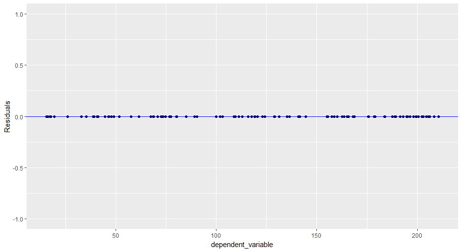
In this plot we explicitly specified the range of the y-axis. The result is that all of the residuals appear to be 0, which given our perfect relationship is what we would expect. But we already know from the summary information that this isn't the case.
Change the y-axis scale to the commented out line above and see what the plot looks like.
Even though we started with a perfect set of data, our model has introduced errors in the predicted values of the dependent variable, albeit in this case extremely small.
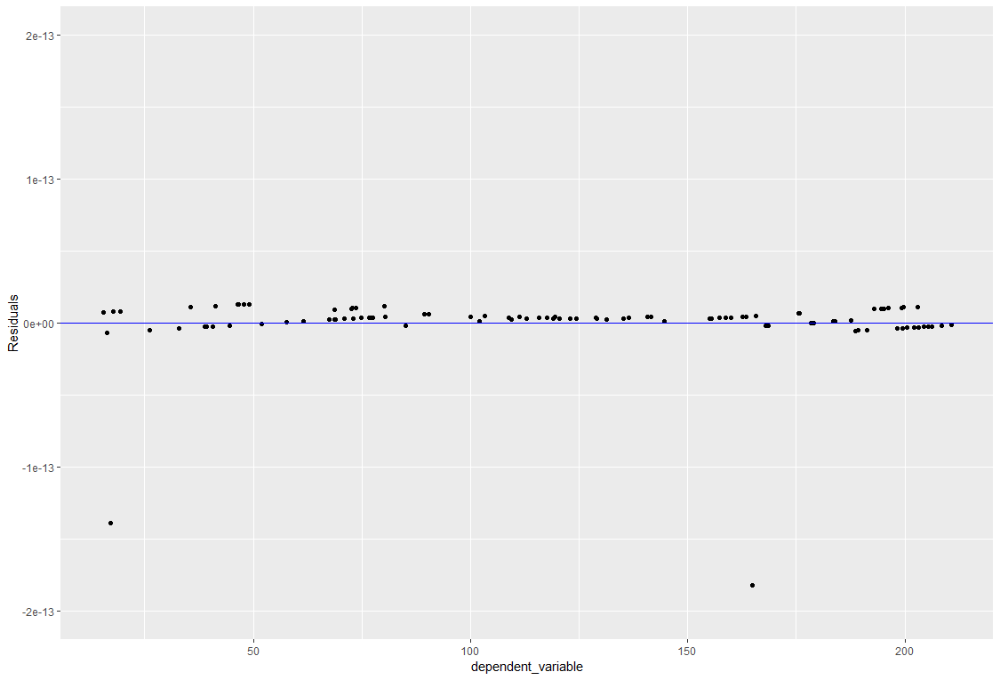
Now that we know what a perfect model looks like, we are going to break it slightly.
To do this we are going to introduce random variations if the predicted values of the dependent variable (fahrenheit_selection) everything else will remain the same.
# add some noise to the data fahrenheit_selection <- (32 + runif(100, -10, 10) ) + (1.8*centigrade_selection +runif(100, (-5)*1.8, (+5)*1.8) ) df_temps2 <- data.frame(y=fahrenheit_selection, x=centigrade_selection) # and plot the results ggplot(df_temps2, aes(x=x, y=y)) + geom_point() + geom_line()
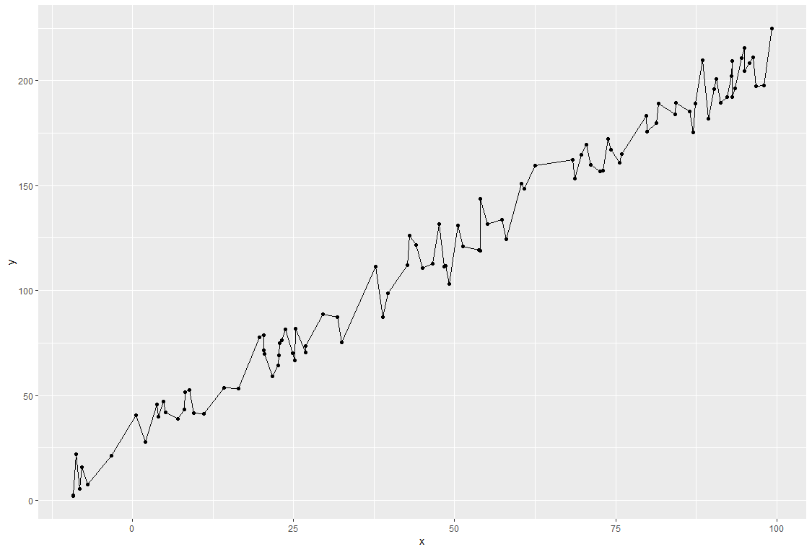
This time the line is not so straight! So, we need to we need to add a regression line produced from geom_smooth as we did before.
ggplot(df_temps2, aes(x=x, y=y)) + geom_point() + geom_smooth(method='lm',formula=y~x)
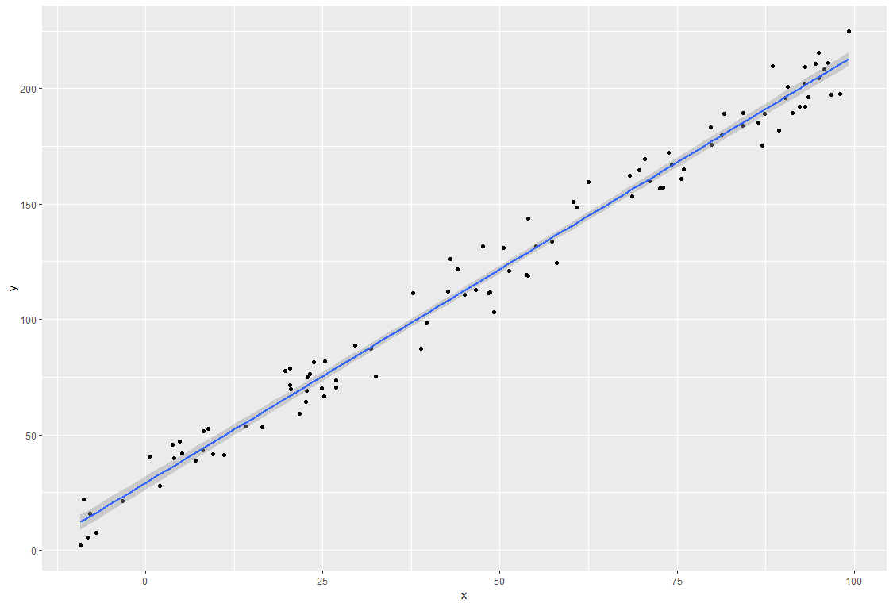
Notice that in addition to the line itself, we also get a shaded area representing the 95% confidence level. You can control this with parameter settings if you want.
Now we want to create a new model and look at the summary information
# create a new model and see what it looks like model2 <- lm(y~x, data=df_temps2) summary(model2)
Call:
lm(formula = y ~ x, data = df_temps2)
Residuals:
Min 1Q Median 3Q Max
-17.0735 -6.9549 -0.7982 6.6247 17.3182
Coefficients:
Estimate Std. Error t value Pr(>|t|)
(Intercept) 29.27385 1.45258 20.15 <2e-16 ***
x 1.84999 0.02458 75.27 <2e-16 ***
---
Signif. codes: 0 ‘***’ 0.001 ‘**’ 0.01 ‘*’ 0.05 ‘.’ 0.1 ‘ ’ 1
Residual standard error: 8.229 on 98 degrees of freedom
Multiple R-squared: 0.983, Adjusted R-squared: 0.9828
F-statistic: 5666 on 1 and 98 DF, p-value: < 2.2e-16
The adjusted R-squared value is still very high, but given that we know what the 'perfect' model should be we can tell from the estimates of the Intercept and 'x' that the model has changed somewhat. But remember, in real life we have no idea what the estimates should be.
We can also plot the residuals as before.
residuals2 <- resid(model2) df_resid2 <- data.frame(Residuals=residuals2, dependent_variable=fahrenheit_selection) #plot(fahrenheit_selection, residuals) #abline(0,0) ggplot(df_resid2, aes(x=dependent_variable, y=Residuals)) + geom_point() + geom_hline(yintercept=0, colour='blue')
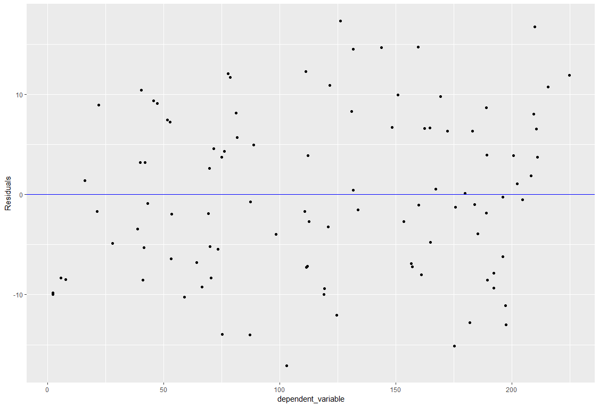
This is type of residual plot we are hoping for. The points evenly but randomly distributed either side of the 0-line.
Can you break the model to such an extent that the Adjusted R-squared is about 0.7 ? What does the regression and residual plots look like?
In the previous example we altered our model by adding linear randomness to both the intercept and the value. This time we are going to add a multiplicative ramdomness to the value. The only difference to the code is that a + becomes a *.
fahrenheit_selection <- (32 + runif(100, -10,10) ) + (1.8*centigrade_selection *runif(100, 0.8, 1.2) ) df_temps3 <- data.frame(y=fahrenheit_selection, x=centigrade_selection) ggplot(df_temps3, aes(x=x, y=y)) + geom_point() + geom_smooth(method='lm',formula=y~x) # Now create the real model to examine various aspects of it. # create a model and see what it looks like model3 <- lm(y~x, data=df_temps3) summary(model3) residuals3 <- resid(model3) df_resid3 <- data.frame(Residuals=residuals3, dependent_variable=fahrenheit_selection) #plot(fahrenheit_selection, residuals) #abline(0,0) ggplot(df_resid3, aes(x=dependent_variable, y=Residuals)) + geom_point() + geom_hline(yintercept=0, colour='blue')
If we look at the summary information first
Call:
lm(formula = y ~ x, data = df_temps3)
Residuals:
Min 1Q Median 3Q Max
-31.952 -8.778 -0.618 8.483 28.308
Coefficients:
Estimate Std. Error t value Pr(>|t|)
(Intercept) 32.80811 2.30008 14.26 <2e-16 ***
x 1.81673 0.03892 46.68 <2e-16 ***
---
Signif. codes: 0 ‘***’ 0.001 ‘**’ 0.01 ‘*’ 0.05 ‘.’ 0.1 ‘ ’ 1
Residual standard error: 13.03 on 98 degrees of freedom
Multiple R-squared: 0.957, Adjusted R-squared: 0.9565
F-statistic: 2179 on 1 and 98 DF, p-value: < 2.2e-16
The model looks pretty good.
Now lets look at the plots.
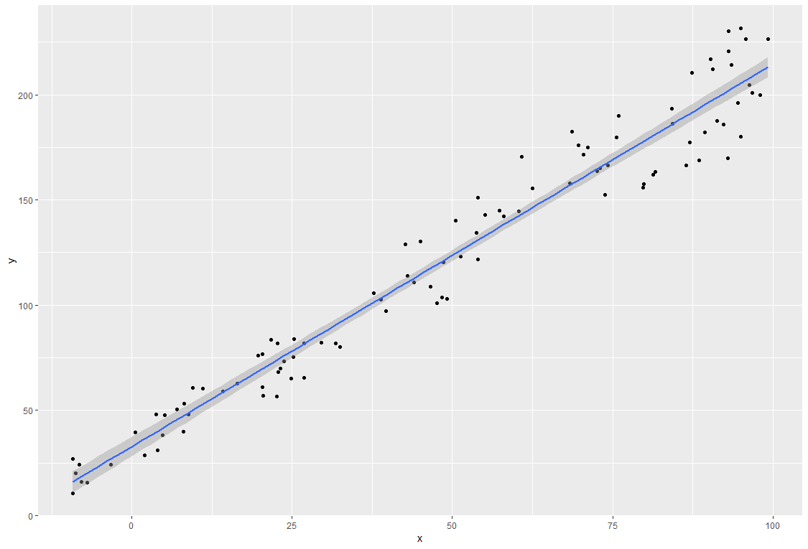
If you look at this plot carefully , you will notice that as x (and hence y) increases, then the points are a greater distance from the line. The is known as Homoscedasticity and is to be avoided in models.
If you look at the residuals plot the effect is equally noticeable.
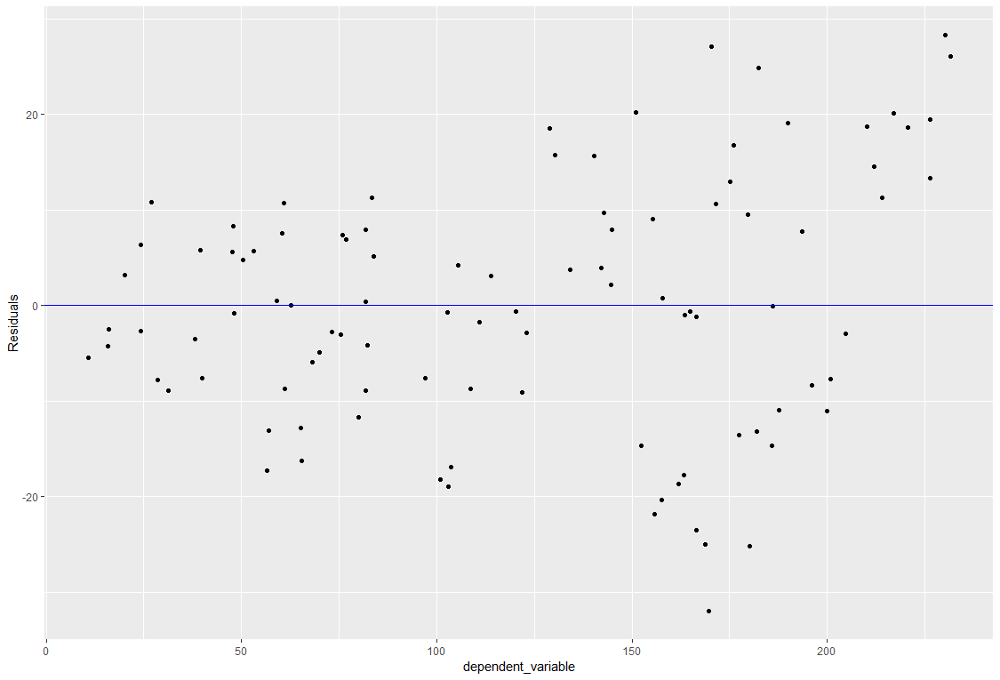
The point ot be made here is that the first graph can only be shown because we have the trivial case of a single independent variable. If you had two, you might try a 3-d graph, but spotting Homoscedasticity in it could be difficult. For 3 or more independent variables, you wouldn't be able to draw a graph at all.
Hover, regardless of the number of independent variables, you will always be able to produce the residuals graph.
non-Homoscedasticity is in fact just one of several assumption that we need to make when dealing with linear regression models. The complete list include;
Linear Relationship : Linear regression needs a linear relationship between the dependent and independent variables.
Normality of Residual : Linear regression requires residuals should be normally distributed.
Homoscedasticity : Linear regression assumes that residuals are approximately equal for all predicted dependent variable values. In other words, it means constant variance of errors.
No Outlier Problem
Multicollinearity : It means there is a high correlation between independent variables. The linear regression model MUST NOT be faced with problem of multicollinearity.
Independence of error terms - No Autocorrelation
(taken from: https://www.listendata.com/2015/09/linear-regression-with-r.html)